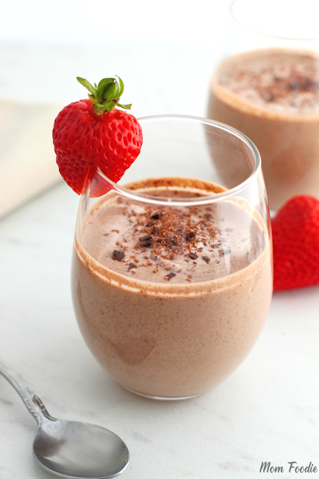

Healthy Chocolate Mousse

Easy chocolate mousse (withouts eggs and whipped cream)
This healthy chocolate mousse is lower in fat and calories, and higher in protein than traditional one.
It's rich in chocolate flavor, but still light and super creamy.
Ingredients:
- 2 cups Greek yogurt (460g)
- 1/2 cup milk, dairy or non-dairy (120ml)
- 6 oz dark chocolate (170g)
- 1-2 tbsp honey, or maple syrup
- 1 tsp vanilla paste or vanilla extract
- 2 raspberries
Steps:
- Strain your Greek yogurt using a cheese cloth.
- In a saucepan add milk and chopped dark chocolate, heat over medium heat, just until the chocolate starts to melt.
- Remove from heat, stir well together and let it sit for 10 minutes.
- Add honey and vanilla and mix well.
- In a bowl add strained Greek yogurt, pour the chocolate mixture and gently fold together.
- Spoon the mixture into small ramekins or dessert bowls, and let it chill in the fridge for 2-3 hours.
- Top with some raspberries.